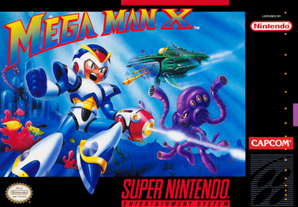
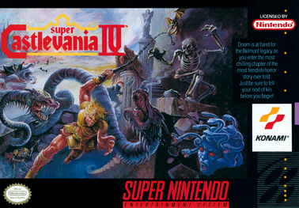

1: Super Metroid
Super Metroid is a 1994 action-adventure game developed by Nintendo and Intelligent Systems and published by Nintendo for the Super Nintendo Entertainment System. It is the third installment in the Metroid series, following the events of the Game Boy game Metroid II: Return of Samus (1991). The player controls bounty hunter Samus Aran, who travels to planet Zebes to retrieve an infant Metroid creature stolen by the Space Pirate leader Ridley.
Following the established gameplay model of its predecessors, Super Metroid focuses on exploration, with the player searching for power-ups used to reach previously inaccessible areas. It introduced elements such as the inventory screen, an automap, and the ability to fire in all directions. The development staff from previous Metroid games—including Yoshio Sakamoto, Makoto Kano and Gunpei Yokoi—returned to develop Super Metroid over the course of two years. The developers wanted to make a true action game, and set the stage for Samus' reappearance.
Super Metroid received acclaim, with praise for its atmosphere, gameplay, music and graphics. It is often cited as one of the greatest video games of all time. The game sold well and shipped 1.42 million copies worldwide by late 2003. Alongside Castlevania: Symphony of the Night, Super Metroid is credited for establishing the "Metroidvania" genre, inspiring numerous indie games and developers. Super Metroid was followed in 2002 by Metroid Fusion and Metroid Prime. It has been re-released on several Nintendo consoles and services.
2: Super Mario 64

Super Mario 64 is a 1996 platform game developed and published by Nintendo for the Nintendo 64. It was released in Japan and North America in 1996 and PAL regions in 1997. It is the first Super Mario game to feature 3D gameplay, combining traditional Super Mario gameplay, visual style, and characters in a large open world. In the game, Bowser, the primary antagonist of the Super Mario franchise, invades Princess Peach's castle and hides the castle's sources of protection, the Power Stars, in many different worlds inside magical paintings. As Mario, the player collects Power Stars to unlock enough of Princess Peach's castle to get to Bowser and rescue Princess Peach.
Director Shigeru Miyamoto conceived a 3D Super Mario game during the production of Star Fox (1993). Development lasted nearly three years: about one year on design and twenty months on production, starting with designing the virtual camera system. The team continued with illustrating the 3D character models—at the time a relatively unattempted task—and refining sprite movements. The sound effects were recorded by Yoji Inagaki and the score was composed by Koji Kondo.
Super Mario 64 was highly anticipated by video game journalists and audiences, boosted by advertising campaigns and showings at the 1996 E3 trade show. It received critical acclaim, with reviewers praising its ambition, visuals, level design, and gameplay, though some criticized its virtual camera system. It is the best-selling Nintendo 64 game, with nearly twelve million copies sold by 2015.
Retrospectively, Super Mario 64 has been considered one of the greatest video games of all time. Numerous developers have cited it as an influence on 3D platform games, with its dynamic camera system and 360-degree analog control establishing a new archetype for the genre, much as Super Mario Bros. did for side-scrolling platform games. It was remade as Super Mario 64 DS for the Nintendo DS in 2004, and has been ported to other Nintendo consoles since. The game has attracted a cult following, spawning many fangames and mods, a large speedrunning presence, and enduring rumors surrounding game features.
3: Mega Man X

Mega Man X is a 1993 action-platform game developed and published by Capcom for the Super Nintendo Entertainment System. It was the first Mega Man game for the 16-bit console and the first game in the Mega Man X series, a spin-off to the original Mega Man series that began on the Super NES's predecessor, the Nintendo Entertainment System. Mega Man X was released in Japan on December 17, 1993 and was released in both North America and Europe the following year. Taking place a century after the original Mega Man series, Mega Man X is set in a futuristic world populated by both humans and "Reploids", robots capable of thinking, feeling, and growing like their human creators. Because of these complex attributes, many Reploids are prone to destructive, renegade activity and are thereafter referred to as "Mavericks". The plot of the game follows the protagonist X, the last creation of Dr. Light and an android member of a military task force called the "Maverick Hunters". With the help of his partner Zero, the last creation of Dr. Wily, X must thwart the plans of Sigma, a powerful Maverick leader seeking to commit genocide against humanity.
With the transition to more advanced gaming hardware, series artist Keiji Inafune explained that the development of Mega Man X involved reinventing Mega Man through gameplay expansion and a more mature storyline while still maintaining the basic concepts on which the franchise was built. Much like the NES Mega Man games that came before it, Mega Man X is an action-platform game where the player takes control of the eponymous character and must complete a set of eight, initial stages in any order desired. Defeating the boss character at the end of each stage grants the player one new weapon that can then be toggled and used at will for the remainder of the game. However, Mega Man X adds a number of new features and makes radical changes to the original gameplay mechanics of previous releases in the series. These include allowing the player to dash along the ground, scale walls, and obtain armor attachments which grant special abilities.
Mega Man X has met with positive reviews for its gameplay, sound, and graphics, as well as its attempt to augment the aging Mega Man franchise. It is considered one of the greatest video games ever made. A longterm commercial success on the SNES, Mega Man X has since been ported to personal computers (PCs) and mobile devices, included in the North American Mega Man X Collection for the GameCube and PlayStation 2 (PS2), and released on the Virtual Console download service for the Wii, the Wii U, and the New Nintendo 3DS. The game also received a remake on the PlayStation Portable (PSP) titled Mega Man Maverick Hunter X.[b] Nintendo re-released Mega Man X in September 2017 as part of the company's Super NES Classic Edition, and a limited physical re-release for the SNES in celebration of Mega Man's 30th Anniversary due for release in September 2018 and published by iam8bit. The game is also included in the Mega Man X Legacy Collection for the PlayStation 4, Xbox One, Nintendo Switch, and Windows.
4: Legend of Zelda: Ocarina of Time

The Legend of Zelda: Ocarina of Time is a 1998 action-adventure game developed and published by Nintendo for the Nintendo 64. It was released in Japan and North America in November 1998 and in PAL regions the following month. The game is the first in the Legend of Zelda series with 3D graphics.
Ocarina of Time was developed by Nintendo's Entertainment Analysis & Development division. It was led by five directors, including Eiji Aonuma and Yoshiaki Koizumi, produced by series co-creator Shigeru Miyamoto, and written by Kensuke Tanabe. Series composer Koji Kondo wrote its soundtrack. The player controls Link in the realm of Hyrule on a quest to stop the evil king Ganondorf by traveling through time and navigating dungeons and an overworld. The game introduced features such as a target-lock system and context-sensitive buttons, which have since become common in 3D adventure games. The player must play songs on an ocarina to progress.
Ocarina of Time was acclaimed by critics and consumers, who praised its visuals, sound, gameplay, soundtrack, and writing. It has been ranked by numerous publications as the greatest video game of all time and is the highest-rated game on the review aggregator Metacritic. It was commercially successful, with more than seven million copies sold worldwide. In the United States, it received more than three times more pre-orders than any other game at the time. A sequel, The Legend of Zelda: Majora's Mask, was released in 2000. Ocarina of Time has been re-released on every one of Nintendo's home consoles and on the iQue Player in China. An enhanced version of the game for the Nintendo 3DS, The Legend of Zelda: Ocarina of Time 3D, was released in 2011. Master Quest, an alternative version of the game including new puzzles and increased difficulty, is included in one of the GameCube releases and the 3D version.
5: Super Castlevania IV

Super Castlevania IV is a 1991 action-platform game developed and published by Konami for the Super Nintendo Entertainment System. It has been re-released multiple times, including for the Super NES Classic Edition.
Super Castlevania IV features expanded play control, 16-bit graphics featuring Super NES's Mode 7, and a soundtrack featuring new pieces and arrangements based on previous Castlevania music. Following the same setting as Castlevania on the NES, the game takes place in 1691 Transylvania, where the vampire hunter Simon Belmont must defeat the vampire Dracula. The game received critical acclaim and is considered one of the greatest video games of all time.